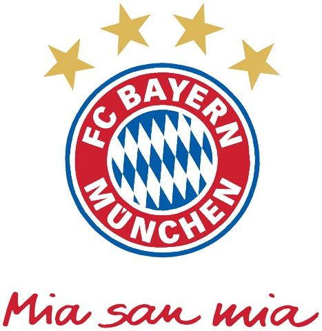
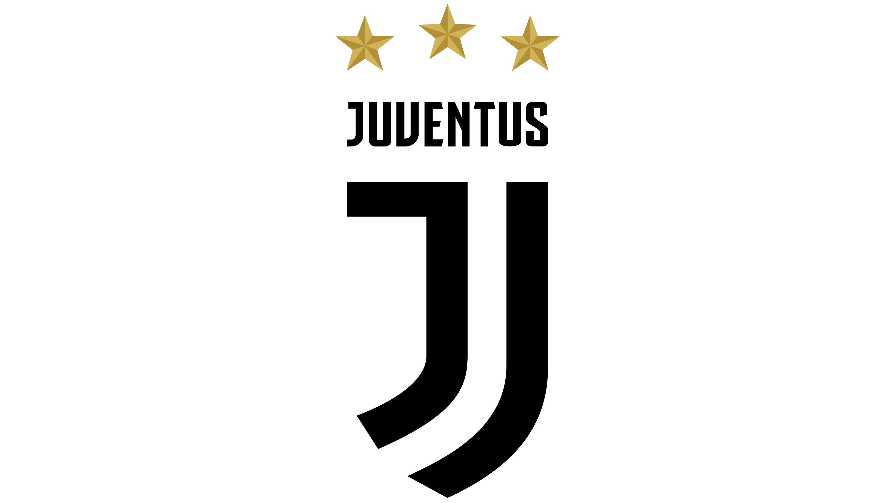
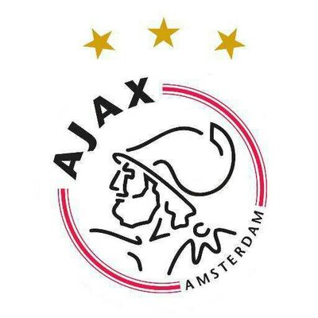
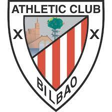

Mi dporte favorito es: Es el fútbol, tuve la oportunidad de practicarlos por unos cuantos años.

Club Independiente Santa Fe.
Es un club de fútbol fundado el 28 de febrero de 1941 en el centro histórico de la ciudad de Bogotá, capital de Colombia.
Leer Mas

Manchester United FC.
Es un club de fútbol de la ciudad de Mánchester Reino Unido que compite en la Premier League y disputa sus partidos como local en el estadio Old Trafford.
Leer Mas

FC Bayern Munchen.
Es una entidad deportiva profesional de la ciudad de Múnich, Alemania. Fue fundado el 27 de febrero de 1900 por once jugadores liderados por Franz John.
Leer Mas

Juventus FC.
Es un club de fútbol italiano con sede en la ciudad de Turín, capital de la región del Piamonte.
Leer Mas

Club Atlético de Madrid.
Es un club de fútbol español de la ciudad de Madrid, fundado el 26 de abril de 1903, siendo por ello uno de los clubes de fútbol activos más longevos de España.
Leer Mas

Ajax de Ámsterdam.
Es un club de fútbol neerlandés de la ciudad de Ámsterdam. Fue fundado en 1900 y juega en la primera división, la Eredivisie, categoría que ocupa desde los primeros años de la competición.
Leer Mas

Athletic Club.
Es un club de fútbol de la villa de Bilbao, País Vasco, España.
Leer Mas

Arsenal FC.
Es un club de fútbol profesional con sede en Holloway, Londres, Inglaterra, que juega en la máxima categoría del fútbol de ese país, la Premier League.
Leer Mas

Santos Futebol Clube.
Es un club de fútbol brasileño, con sede en la ciudad de Santos, Estado de São Paulo. Fue fundado el 14 de abril de 1912 y juega en el Campeonato Brasileño de Serie A.
Leer Mas

Clube de Regatas do Flamengo.
Es un club deportivo brasileño en la ciudad de Río de Janeiro, creado en el Bairro e Praia del mismo nombre, conocido principalmente por su sección de fútbol.
Leer Mas

Club Atlético Boca Juniors.
Es una entidad deportiva argentina con sede en el barrio de La Boca, Buenos Aires. Fue fundado en dicho barrio el 3 de abril de 1905 por seis vecinos adolescentes hijos de italianos.
Leer Mas

Selección de fútbol de Colombia.
es el equipo que representa a su país en las competencias internacionales de fútbol.
Leer Mas

Deutsche Fußball national mannschaft.
Es el equipo formado por jugadores de nacionalidad alemana que representa desde 1908 a la Federación Alemana de Fútbol en las competiciones oficiales.
Leer Mas
Selección de fútbol de los Países Bajos.
Es el equipo representativo de este país en las competiciones oficiales.
Leer Mas

Selección de fútbol de Inglaterra.
Es el equipo representativo del país desde 1872 y es controlado por la Asociación Inglesa de Fútbol en las competiciones oficiales organizadas por la Unión Europea de Asociaciones de Fútbol y la Federación Internacional de Asociaciones de Fútbol.
Leer Mas

Selección de fútbol de Brasil.
Es el equipo que representa a dicho país en las competiciones oficiales. Su organización está a cargo de la Confederación Brasileña de Fútbol.
Leer Mas